Tutorial Project: Calculator¶
Part 1: Create Calculator window and the first widget¶
In this section we will go through the steps to create the simple calculator window from the previous page. In later sections we will modify it to highlight certain features like other sizer types, menus and status bars.
Create the basic structure:¶
- Select “File->New” to create a new file and “File->Save” to save a .wxg file to a directory.
- Add the frame:
- click on the Frame icon on the “Windows” line of the Palette panels
- as class name, enter CalculatorFrame: 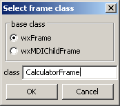
- leave “Add panel and sizer” checked
- A frame with a panel and a sizer
 with one slot is now visible in the Tree view and the Design window
(there the slot is visualized by a hatched area)
with one slot is now visible in the Tree view and the Design window
(there the slot is visualized by a hatched area) - To extend the vertical box sizer to six slots:
- go to the slot in the Tree view or the Design window
- use right mouse click “Add slots” or hit
Ctrl-Shift-A - select 5 and hit OK
- alternatively you may hit
Ctrl-Afive times
- Now add a horizontal box sizer to the first slot:
- in the Palette on the “Sizer” line click on the BoxSizer icon to start the placement
- in the Tree view or the Design window, click on the first slot to place the sizer there
- a dialog will open
- set “Orientation” to Horizontal and the number of slots to 2 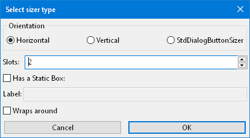
- in the Palette on the “Sizer” line click on the BoxSizer icon
- Place a StaticText
 as label (found on the “Static” line of Palette) in the top left slot.
You will be asked to enter a label text. Enter Value 1: for this.
as label (found on the “Static” line of Palette) in the top left slot.
You will be asked to enter a label text. Enter Value 1: for this. - Place a TextControl (found on the “Inputs” line) in the top right slot
Note
It would be possible to place sizer and controls directly on the frame, but usually a panel is added first,
as a frame is really just a frame around the other things.
Especially for Windows, always add a panel to have correct background colours and keyboard navigation
between widgets (using the Tab key)
Adjust properties:¶
Your design should now look like this:
| 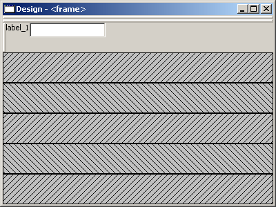 |
The window title is not meaningful.
Also, layout and alignment need to be changed, but we’ll change this later on.
So, some properties of the label and the text need to be modified:
- Select the frame in the Tree or the Design window.
- If not yet visible, make the Properties notebook of the main window visible by dragging the sashes (the separators between the three parts of the main window).
- Go to Properties -> Widget -> Title and change it from frame to Calculator.
(You could also edit the title directly in the Tree window by clicking into the label and/or pressingF2.)
- You may want to define a default size for the frame:
Go to Properties -> Common -> Size and set it to 400,300.
Without this, the frame will be created with the minimum possible size to fit all controls.
This file can be found in the folder wxglade/examples/Calculator:
Calculator-01.wxg
Part 2: Add the remaining rows and widgets¶
We need almost the same combination of sizer+label+text for the second value and the result, so we’ll copy the horizontal sizer including it’s content from the first to the third and fifth slot of the vertical sizer.
Having done so, we will modify the label fields of the newly copied wxStaticText widgets to Value 2 and Result (consistent with the layout for the calculator presented on the wx Basics page).
After that, we’ll add the “Operator” radio box and the buttons.
There are several methods to copy:¶
- Copy & Paste in Design Window:
- select the “handle” of the sizer, which is shown in red here: 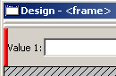
- then hit
Ctrl-Cto copy the selected sizer (or use the context menu)- select the third, empty slot, where you want to place a copy; it will be hatched in blue
- then hit
Ctrl-V(or use the context menu)- select the fith, empty slot
- then hit
Ctrl-V(or use the context menu)
- Copy & Paste in the Tree view of the main Window:
- select the sizer node
- then hit
Ctrl-Cto copy the selected sizer (or use the context menu)- select the third, empty slot, where you want to place a copy
- then hit
Ctrl-V(or use the context menu)- select the fith, empty slot
- then hit
Ctrl-V(or use the context menu)
You may of course copy in the Design window and paste into the Tree or vice versa.
- Drag & Drop in Design Window:
- hold the
Ctrlkey and drag the sizer handle to the empty slot
- Drag & Drop in the Tree view of the main Window:
- hold the
Ctrlkey and drag the sizer node / icon in the Tree view to the empty slot
If you don’t hold the Ctrl key, the item will not be copied, but moved.
You may drag items between different windows, e.g. from Design window to the Tree view or to another running wxGlade instance.
Further Editing¶
The TextCtrl adjacent to the “Result” StaticText should display multiple lines of text and should not be editable. To modify accordingly, just follow these steps:
- Select the text control txt_ctrl_3
(depending on the exact steps of editing, the name might be slightly different)- Go to Properties -> Widget
- In the section “Style”, enable wxTE_MULTILINE and wxTE_READONLY
- Go to Properties -> Common
- Click the “…” button right to Background and select System Colour: wxSYS_COLOUR_BTNFACE or
another colour or just enter wxSYS_COLOUR_BTNFACE into the text control.
The last step is to have a grey background. For single line read-only text controls, this is done automatically by wx, but not with multiple lines.
In the next steps fill the remaining slots of the main sizer:
- insert a two-slot horizontal sizer with a label Operator: and a radio box into SLOT 1
- place a horizontal line into SLOT 3
- insert a two-slot horizontal sizer with two buttons into SLOT 5
- For the first button, select the checkbox Properties -> Widget -> Default.
This will make this button the default one, i.e. when the user hits Enter it will have the same effect as pressing this default button.
Note
- When you want to place multiple elements of the same type,
just hold the
Ctrlkey when placing an element to stay in placement mode (on Mac OS use theShiftkey). - When you have placed an element in the wrong slot,
just drag it to the right slot or delete it with the
Delkey or the context menu.
Define the options “+-*/” for the radio box by going to the “Widget” tab:
|
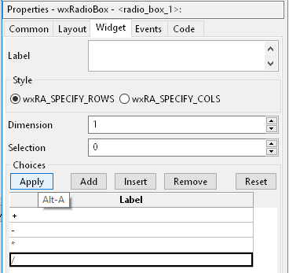 |
Change labels and names:¶
After copying, the controls will have default values and names. Usually you have to change them.
You can do this in the Properties notebook or directly in the Tree view of the main window.
To edit in the Tree view, you can select and then click on the label or press F2.
This needs to be done now:
- Set the names of the text controls to text_value1, text_value2 and text_result.
- Set the name of the radio box to radiobox_operator
- Set the labels to Value 2: and Result:
- Set the name of the first button to button_execute and the label to Execute.
- Set the name of the second button to button_reset and the label to Reset.
For our example project where multiple labels and names have to be modified, it’s much faster to do so in the Tree window.
Example for editing in the Tree view of the main window:
- The name is button_1 and the label is button_1
- The displayed text in the Tree window is button_1: “button_1”
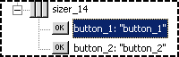 - Change to button_execute: “Execute”
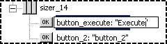
The Tree structure of your design should now look like this:
| 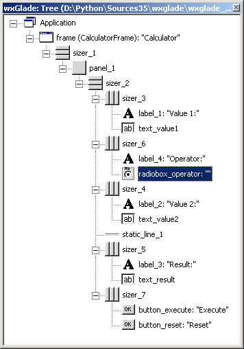 |
The file can be found in the folder wxglade/examples/Calculator:
Calculator-02.wxg
Final Steps: Layout¶
Your design should now look like this:

|
So all elements are there, but the layout is not yet what we want to have:
We want the rows with the values, operators and buttons not to grow vertically:
- select one of the horizontal sizers (e.g. sizer_2 around Value 1)
- set Properties -> Layout -> Proportion to 0
- select the next of the sizers (e.g. around Operator)
- either set Properties -> Layout -> Proportion to 0
or just hit
Ctrl-Yto apply the last change to the selected sizer - do the same for the remaining sizers (e.g. around Value 2 and the buttons)
We want the text controls to grow horizontally to fill the available space:
- select one of the text controls (e.g. text_value1)
- set Properties -> Layout -> Proportion to 1
- do the same for the other controls, either by modifying the Proportion properties
or by hitting
Ctrl-Yto apply the last change to the selected control
The labels Value 1, Operator and Value 2 should better align vertically with their text controls:
- select label
- set the checkbox Properties -> Layout -> Alignment -> wxALIGN_CENTER_VERTICAL
- do the same for the other two labels
We want the Result text control to fill the available vertical space:
- select text control
- set the checkbox Properties -> Layout -> Alignment -> wxEXPAND
We want the buttons at the bottom to be centered; so the layout of the sizer around them needs to be set:
- select sizer
- go to Properties -> Layout -> Alignment
- de-select the checkbox wxEXPAND
- select the checkbox wxALIGN_CENTER_HORIZONTAL
We want a small border above and beyond the horizontal line and around each of the buttons:
- select the horizontal line static_line_1
- set Properties -> Layout -> Border to 5
- uncheck Properties -> Layout -> Border -> wxLEFT and wxRIGHT
- select the first button
- set Properties -> Layout -> Border to 5
- do the same with the second button (e.g. by selecting it and then hitting
Ctrl-Y)
We want a small border around beyond the pairs of label and value:
- select the horizontal sizer sizer_2 around the first line
- set Properties -> Layout -> Border to 4
- do the same with the sizers around Operator and Value 2
(e.g. by selecting it and then hitting
Ctrl-Y)
At this point, it’s time for a preview:
Select “Preview” from the context menu or the main menu or from the Properties notebook when the frame is selected.
Alternatively, press F5
| 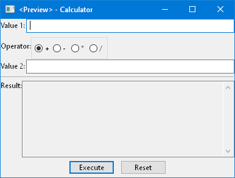 |
This file can be found in the folder wxglade/examples/Calculator:
Calculator-03.wxg.
If you are curious how a design turns into Python source code, you may have a look at the section Create and Use Source Code before going through the next sections.
Actually, “Preview” internally creates and executes Python source code.
Excursion: Layout properties: Proportion and Alignment->wxEXPAND:¶
The “Proportion” of 1 makes the element grow with a proportional factor of 1 when the horizontal sizer is growing. Please note that this growth happens only in the “main” direction of the sizer; the sizer is horizontal, so this change makes the text control grow in width.
For a growth in the other direction, wxEXPAND in the “Alignment” box would need to be checked.
You may try this to see the difference:
| Horizontal Sizer: Proportion 0 TextCtrl: Proportion 0 The first row occupies the minimum height as defined by the label and the text control. The text control occupies its minimum width, as defined. |
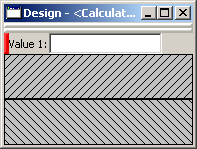 |
| Horizontal Sizer: Proportion 1 TextCtrl: Proportion 0 The first row consists of the horizontal sizer. It grew vertically, as it is placed in a vertical sizer. |
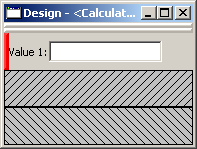 |
| Horizontal Sizer: Proportion 1 TextCtrl: Proportion 1 The text control grew in width, as it is in a horizontal sizer. |
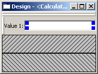 |
| Horizontal Sizer: Proportion 1 TextCtrl: Proportion 1, EXPAND The text control expanded vertically, i.e. perpendicular to the main direction of the surrounding horizontal sizer. |
 |
Part 3: Add a Notebook¶
For many applications it’s desirable to place the GUI elements on a notebook control. For our calculator e.g. we may want to have the controls on the first page and a log on the second page:
| 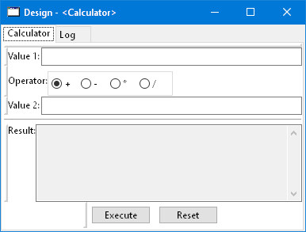 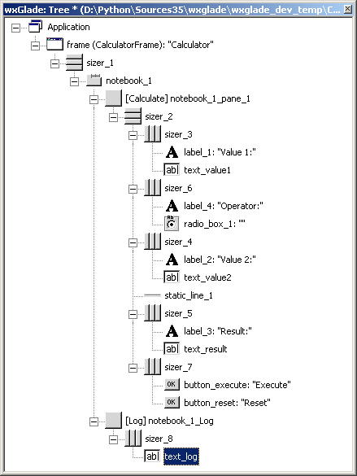 |
A notebook can be added to an empty sizer slot or as direct child of a frame, splitter or another notebook. In our case, we want to keep the existing controls. So we cut the panel sizer, add a notebook and then paste the panel to the first notebook page.
Cut the toplevel panel:
- Go to the toplevel panel panel_1 in the Tree view or the Design window
and select “Cut” or hit
Ctrl-X:
| 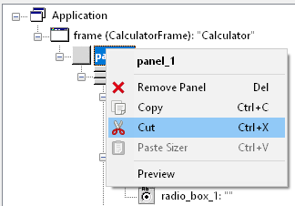 |
The panel and it’s children are now on the clipboard and can be pasted back later. The frame does not have a child now; this is visualized by an empty slot. Note that in the Tree view this SLOT looks different from a sizer slot:
| 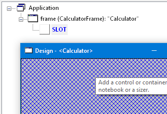 |
Add a notebook:
- click on the Notebook icon
 in the section “Containers” of the Palette panel to start placing a notebook
in the section “Containers” of the Palette panel to start placing a notebook - click on the hatched area in the Design window or on the frame’s slot |frame_slot| in the Tree control of the main window
- in the dialog, select wxNB_TOP to place the notebook tabs at the top; keep “Pages” 1 and uncheck Add panels.
The newly created notebook will have one page already, which does not contain anything. It will have a default name like notebook_1_pane_1.
Paste the panel to the notebook page:
- Go to the empty notebook page [notebook_1_pane_1] in the Tree view or the Design window and select “Paste” or hit
Ctrl-V:
The panel including sizer and all controls is now the first page of the notebook:
| 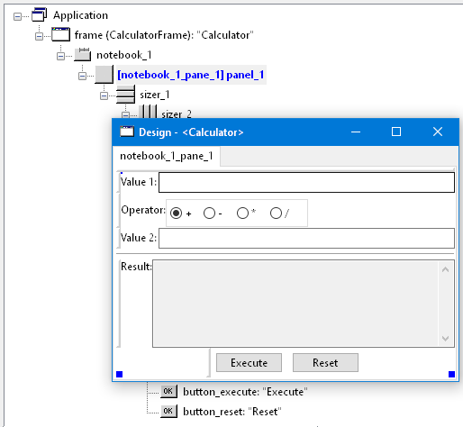 |
Add second notebook page and set the tab labels:
|
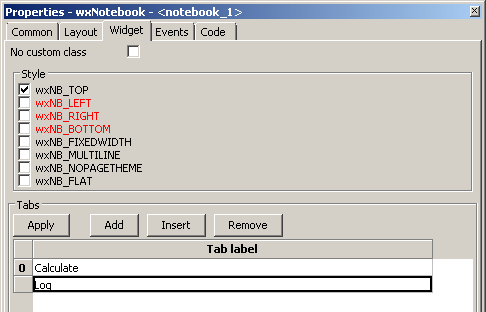 |
Alternatively, you may select “Add Notebook Tab” in the Tree view or the Design window and rename the tabs in the Tree view. E.g. by changing [notebook_1_pane_1] panel_1 to [Calculator] panel_1.
Once you are familiar with the Tree view, this is the fastest way.
| 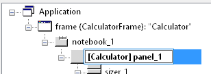 |
| 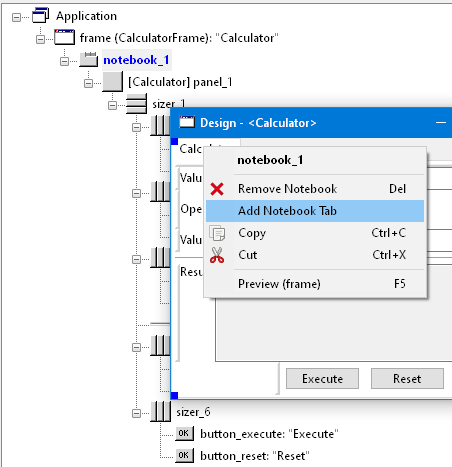 |
Note
After adding a page to a notebook, this will contain a panel by default. You may delete this if you want e.g. to place a splitter on the page or e.g. a text control that should fill the whole page.
Fill the second page:
There are two ways to place the text control on the second page:
- Add a single-slot sizer to the notebook page panel. Then place the text control in the sizer slot.
- Remove the panel from the notebook page and add a text control instead.
Here we will take the second option:
- remove the panel (which probably has the name notebook_1_pane_1)
- the empty page will be displayed in the Tree view as PAGE 1
- add a text control to PAGE 1
- set the widget style to wxTE_MULTILINE and wxTE_READONLY
- set the widget background color to wxSYS_COLOUR_BTNFACE
- rename to text_log
This file can be found in the folder wxglade/examples/Calculator:
Calculator-04-Notebook.wxg
Part 4: Use of Spacers¶
Sometimes you need to keep some space in a sizer, either with a fixed size or growable, e.g. to have a gap between two controls or to align two controls to the left and the right edge of a window or to align a control to the center.
To add a spacer, click the Spacer icon 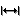 and place it in a sizer slot.
In our example, we may place a spacer to the left and right of the operator radio box to center it:
|
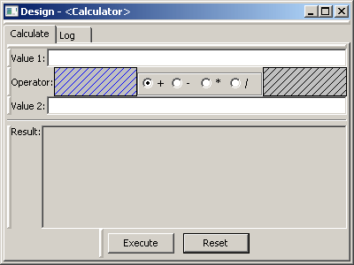 |
|
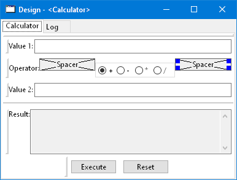 |
In the Tree view you can see the structure: |
 |
In the Properties notebook you can see the settings to make the spacers grow: |
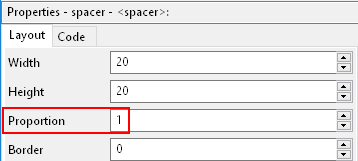 |
| As the spacers have a height of 20, they’re now looking a bit odd in the Design window. You may want to make them disappear by setting the theight to 0 or to fill the available space by checking EXPAND. For the actual window this will not make a difference in this case. |
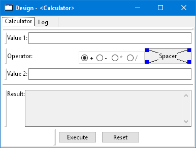 |
This file can be found in the folder wxglade/examples/Calculator:
Calculator-05-Spacers.wxg
Part 5: Use of Grid Sizers¶
The current version doesn’t look perfect as the controls are not vertically aligned. To change this, the labels can be modified to have the same fixed size. This may cause problems when running on a different platform with a different font size. Instead, we will now move the controls into a grid sizer.
There are three grid sizers which are supported by wxGlade:
- GridSizer: all columns have the same width, all rows have the same height
- FlexGridSizer: all rows and columns may have different sizes.
Any row(s) and/or column(s) can be defined to be ‘growable’ - GridBagSizer: a grid that allows items to span multiple rows or columns.
The editing logic is a bit different from the other sizers.
For our calculator we need the FlexGridSizer as the first column is fixed and the second column should grow. The result will look like this:
| 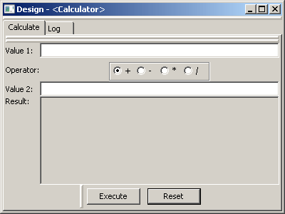 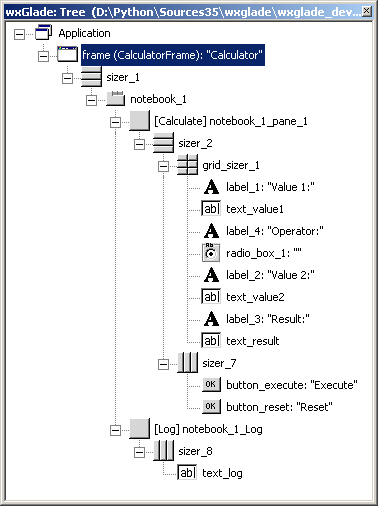 |
To get there:
(You may want to start from Calculator-05-Spacers.wxg if your current file is too different, e.g. because you did not complete Part 4 above.)
- Insert/add a slot to the vertical sizer inside the notebook and panel:
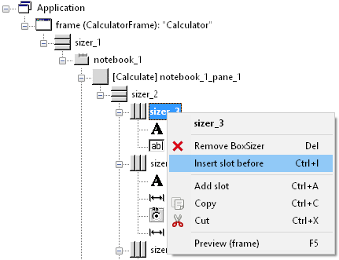 - Add a GridSizer
 to this slot
to this slot - In the grid sizer dialog, select FlexGrid, 4 rows and 2 cols:
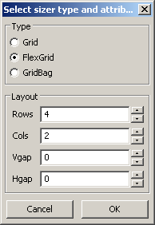 - Move the labels and controls to the slots of the newly created sizer.
- Delete the old sizers and spacers.
- In Properties -> Grid: make column 2 and row 4 growable:
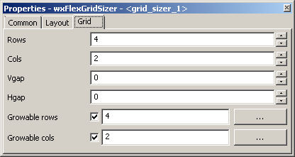 - To make the text controls text_value1 and text_value2 actually fill the growable column:
activate Properties -> Layout -> Alignment -> wxEXPAND for both of them.
The logic with wxEXPAND is a bit different than with non-grid sizers. If it is active, the control will grow horizontally and vertically. If you want to avoid this, you need to add a horizontal or vertical box sizer ‘between’ grid sizer and control.
This file can be found in the folder wxglade/examples/Calculator:
Calculator-06-GridSizer.wxg
Summary¶
You should know by now how to
- create a window structure without menu, tool or status bar
- lay out and align controls using sizers
- edit the structure in the Design window and the Tree view, including Cut/Copy/Paste and Drag and Drop
- modify layout and other properties in the Properties notebook
Some things to remember, to save you a lot of work:
- Names and labels can be edited directly in the in the Tree view.
- When you want to apply changes to multiple widgets, edit the first, then go to the next and use Re-do or Repeat to apply one or more changes:
- Re-do:
Ctrl-Yor “Edit->Re-do” or toolbar right-arrow- Repeat:
Ctrl-Ror “Edit->Re-do” or toolbar second right-arrow
Please keep in mind how to create a good structure:
- Always use the simplest available sizers. Usually you will need mainly box sizers and maybe one or two FlexGridSizers.
- Use nested sizers to match the hierarchical / logical structure of your project. This will make it easy to re-arrange things to find the best user interface.
- Never ever try to use a grid sizer as main sizer of a window trying to resemble pixel placement or Tkinter’s grid geometry manager. This is a mess to create and maintain.
Next steps¶
- create source code and add event handlers - see Create and Use Source Code
- add a menu - see Menu, Status Bar, Tool Bar

{kind=link}
{kind=link}
{kind=link}
{kind=link}
{kind=link}
{kind=link}
{kind=link}
{kind=link}
{kind=link}
{kind=link}
{kind=link}
{kind=link}
{kind=link}
{kind=link}
{kind=link}
{kind=link}
{kind=link}
{kind=link}
{kind=link}
{kind=link}
{kind=link}
{kind=link}
{kind=link}
{kind=link}
{kind=link}
{kind=link}
{kind=link}